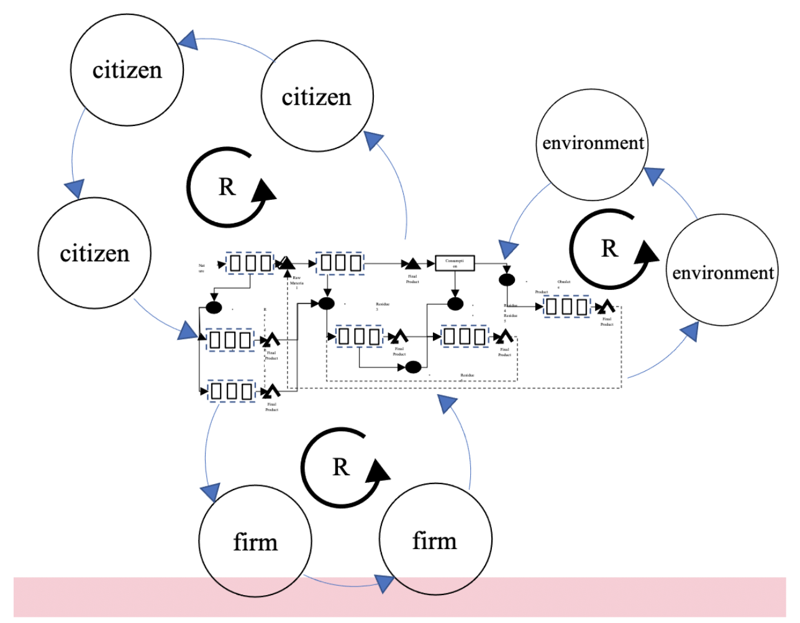

What do cities like Barcelona (Spain), Austin (USA), Bangalore (India), Curitiba (Brazil), Dublin (Ireland), Metz (France) or Stavanger (Norway) have in common? Most of them have implemented ‘state’ disruptive strategies; they have made a great leap to spectacular successes, and have undergone tremendous transformations, from having a low profile by world standards to becoming notable cities, with vibrant dynamic activities globally recognised, not only at the economic level, but in their social and ecological behaviours. These cities have broken with conventional paradigms. They have used innovative practices to deliver outstanding results that have positioned them in world-class arenas.
A study carried out from 2007 to 2010 focused on a small group of cities that have made tremendous transitions in short periods of time, changed their traditional paradigm of steady growth and today are internationally well-positioned. These cities have produced interesting results that can be replicated under different circumstances. This study was designed to meet two important objectives: to observe the inflection points where the cities made the great transformations in terms of world-class performance, and to identify the enabling mechanisms that made possible the transitions and transformations that produced large-scale changes and created interdependent spaces in which citizens, social communities, businesses and their local environments, articulated a harmonious balanced development. Combining these enabling mechanisms, cities have produced a disruptive performance, mainly through: technological innovation, effective industrial policies, outstanding social policies, and the decision making of exceptional trail blazers and champions who have had a ‘holistic development’ vision, among other factors.These cities have created highly attractive regional poles, vibrant economies and equitable social growth; and most of them have developed sustainable civic decision-making processes, designed to preserve non-renewable resources for future generations.
From this study we created Innovacities: a procedure to find how the innovation strategies have affected the behavior of several well-recognised cities, and how some of them have experienced tremendous transitions in specific periods of time, applying state-oriented strategies for innovation. We apply these key factors that drive a city to achieve high levels of innovation deployed on outstanding characteristics and supported by regional innovation systems. Finally we measure the outstanding performance of the cities that characterises them as different, innovative good places to live, vibrant and dynamic and tolerant in terms of race and religion.
In order to transform a conventional “linear” cities into “circular cities” for the creation of sustainable increasing returns for the benefit of the infrastructure need to support society and industry on a circular mechanism, we need to:
The view of economic growth is inherent in public policies. In this sense, the practices have changed towards more resource efficient practices trying to reduce the environmental impact of the economic activities. However, this change towards efficiency does not decouple economic growth from the environmental impact also it has left behind the social inequity among the population.
Based on the SWIT framework, we have developed a decoupling model that can be implemented in cities, which play a major role in economic growth and also suffer from environmental pollution in different ways. With our decoupling model, the multiple industrial linear chains can be transformed into clusters of innovative new business and solutions able to create new economic flows, reduce the environmental impact of economic activities and reduce the economic gap within the inhabitants of cities and communities. The objective of the decoupling model goes beyond the formation of industrial clusters that exchange energy and materials in order to increase resource efficiency. This model considers the social and the environmental spheres as active stakeholders of the industrial cluster instead of being considered as externalities. Consequently, the social and the environmental spheres are benefited by design as the economic sphere.
The strategies for implementing projects at the city-level and their measurement mechanisms have not been thoroughly studied. However, part of the dynamics seeks to work with resilience metrics (Readiness and adaptability) and circularity metrics (Validation of strategies and repositioning of the city). Projects must be aligned with tangible and quantifiable benefits in the city and must also be aligned with state and national sustainability and growth plans.